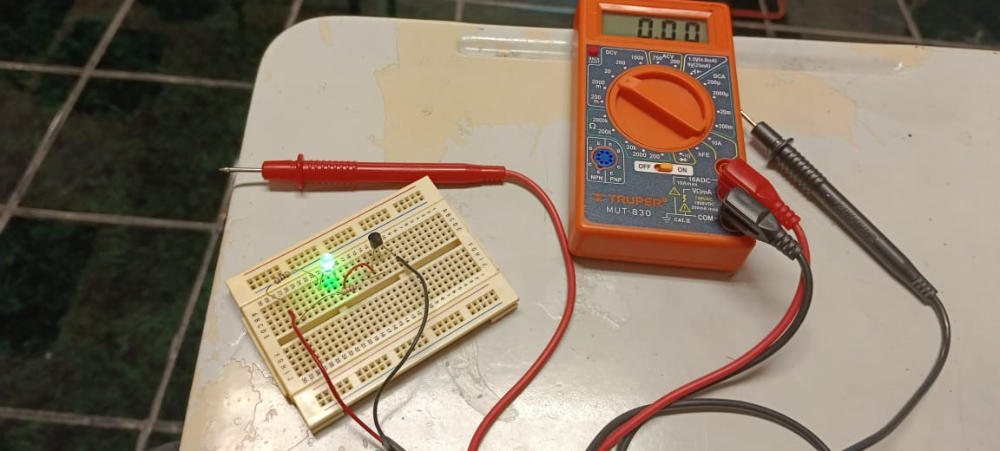
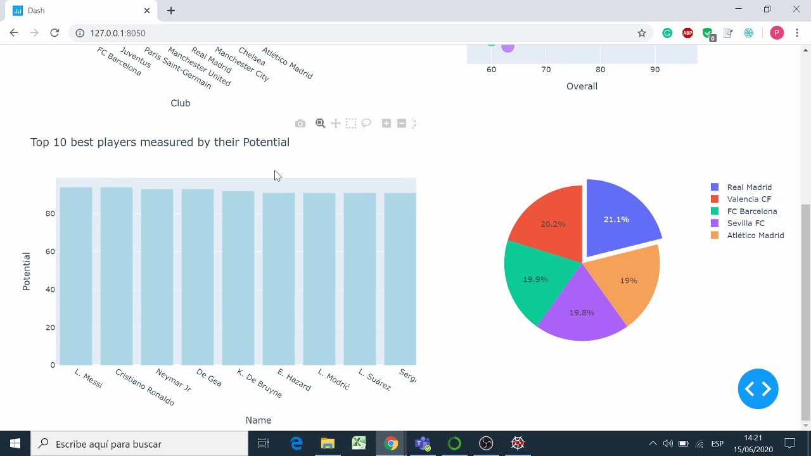

Electrónica Analógica
En mis proyectos de electrónica analógica, me he enfocado en el diseño y análisis de circuitos que procesan señales continuas, como amplificadores, filtros y fuentes de alimentación. Estos proyectos incluyen la creación de soluciones prácticas para aplicaciones como el procesamiento de audio y la regulación de voltaje en dispositivos electrónicos. He trabajado con componentes como resistencias, capacitores, transistores y amplificadores operacionales para optimizar el rendimiento de los circuito

Dashboard
En mis proyectos de creación de dashboards con Python, he desarrollado soluciones que permiten visualizar y analizar grandes volúmenes de datos de manera interactiva y eficiente. Utilizando bibliotecas como Pandas para la manipulación de datos y Matplotlib o Plotly para la creación de gráficos, he diseñado interfaces que facilitan la toma de decisiones basadas en datos. Estos dashboards permiten a los usuarios visualizar métricas clave, hacer un seguimiento de tendencias y generar informes personalizados